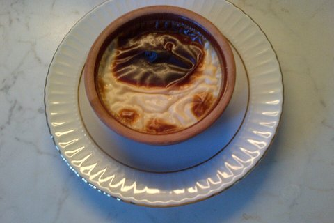
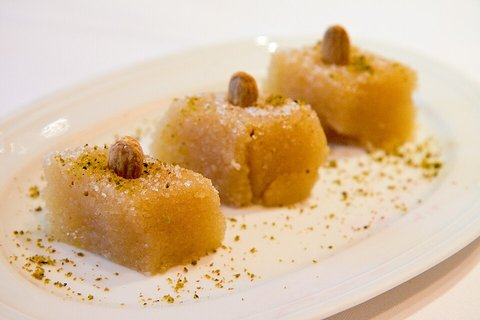
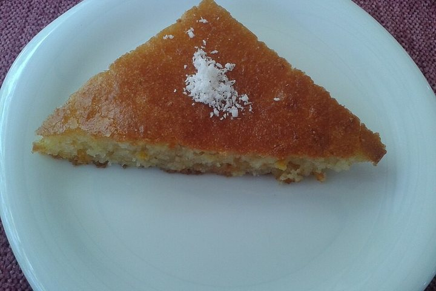
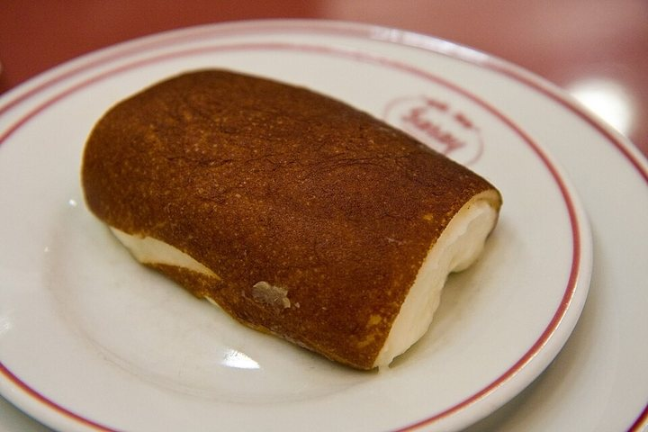

TatlılarSütlüden şerbetliye, yemeğin üzerine tatlı bir kapanış için 6 nefis tarif. 
Sütlaç⏱ 45 dk👥 6 kişiOrta
Ocakta pişen hafif ve geleneksel bir sütlü tatlı.
Malzemeler- 1 litre süt
- Yarım su bardağı pirinç
- 1 su bardağı şeker
- 2 yemek kaşığı pirinç unu, tarçın
Yapılışı- Pirinci az suyla yumuşayana kadar haşlayın.
- Sütü ekleyip kaynatın, şekeri ilave edin.
- Pirinç ununu biraz sütle açıp karışıma ekleyin.
- Kaselere paylaştırın, soğuyunca tarçın serpin.
💡 Sürekli karıştırarak pişirirseniz dibi tutmaz.

İrmik Helvası⏱ 30 dk👥 6 kişiKolay
Fıstıklı, şerbetli ve sıcacık; misafir sofralarının vazgeçilmezi.
Malzemeler- 2 su bardağı irmik
- 125 gr tereyağı
- Yarım su bardağı fıstık
- 2,5 su bardağı süt, 1,5 su bardağı şeker
Yapılışı- Süt ve şekeri ısıtıp şerbeti hazırlayın.
- İrmik ve fıstığı tereyağında pembeleşene kadar kavurun.
- Sıcak şerbeti ekleyip karıştırın.
- Kapağını kapatıp 10 dakika demlendirin.
💡 Şerbeti eklerken sıçramaması için ocağı kısın.

Kakaolu Kek⏱ 50 dk👥 8 kişiKolay
Çay saatlerinin klasiği, yumuşacık ve bol kakaolu bir kek.
Malzemeler- 3 yumurta, 1 su bardağı şeker
- 1'er su bardağı süt ve sıvı yağ
- 2,5 su bardağı un, 3 yemek kaşığı kakao
- 1'er paket kabartma tozu ve vanilya
Yapılışı- Yumurta ve şekeri köpük olana kadar çırpın.
- Süt ve yağı ekleyip karıştırın.
- Un, kakao, kabartma tozu ve vanilyayı ekleyin.
- Yağlanmış kalıpta 180 derecede 35 dakika pişirin.
💡 Kek pişerken ilk 20 dakika fırının kapağını açmayın.

Fıstıklı Baklava⏱ 85 dk👥 10 kişiZor
İncecik yufkalar ve bol fıstıkla bayram sofralarının yıldızı.
Malzemeler- 1 paket baklavalık yufka
- 250 gr tereyağı
- 1,5 su bardağı Antep fıstığı
- 3 su bardağı şeker, 2,5 su bardağı su, limon
Yapılışı- Şeker, su ve limonu 15 dakika kaynatıp şerbeti soğutun.
- Yufkaları yağlayarak tepsiye serin, ortasına fıstık serpin.
- Kalan yufkaları da yağlayarak dizin ve dilimleyin.
- 180 derecede kızarana kadar pişirip soğuk şerbeti dökün.
💡 Sıcak baklavaya soğuk şerbet dökülürse baklava çıtır kalır.

Revani⏱ 50 dk👥 8 kişiKolay
İrmikli, yumuşacık ve şerbetli; hazırlaması kolay bir tepsi tatlısı.
Malzemeler- 3 yumurta, 1 su bardağı şeker
- 1'er su bardağı yoğurt, irmik ve un
- 1 paket kabartma tozu
- 2,5 su bardağı şeker, 3 su bardağı su
Yapılışı- Şerbeti kaynatıp soğumaya bırakın.
- Yumurta ve şekeri çırpın, yoğurdu ekleyin.
- İrmik, un ve kabartma tozunu ekleyip karıştırın.
- 180 derecede 35 dakika pişirin, ılıkken şerbetini dökün.
💡 Üzerine hindistan cevizi veya limon kabuğu rendesi serpebilirsiniz.

Kazandibi⏱ 40 dk👥 6 kişiOrta
Altı hafifçe yakılarak karamelize edilen geleneksel bir muhallebi.
Malzemeler- 1 litre süt, 1 su bardağı şeker
- 4 yemek kaşığı pirinç unu
- 2 yemek kaşığı nişasta, 1 paket vanilya
- Tabanı için pudra şekeri ve tereyağı
Yapılışı- Süt, şeker, pirinç unu ve nişastayı karıştırarak pişirin.
- Koyulaşınca vanilyayı ekleyin.
- Tereyağlı ve şekerli tepsinin altını ocakta karamelize edin.
- Muhallebiyi tepsiye döküp soğutun, rulo şeklinde kesin.
💡 Tepsinin altını yakarken tepsiyi sürekli çevirin; her yeri eşit renk alır.
| |